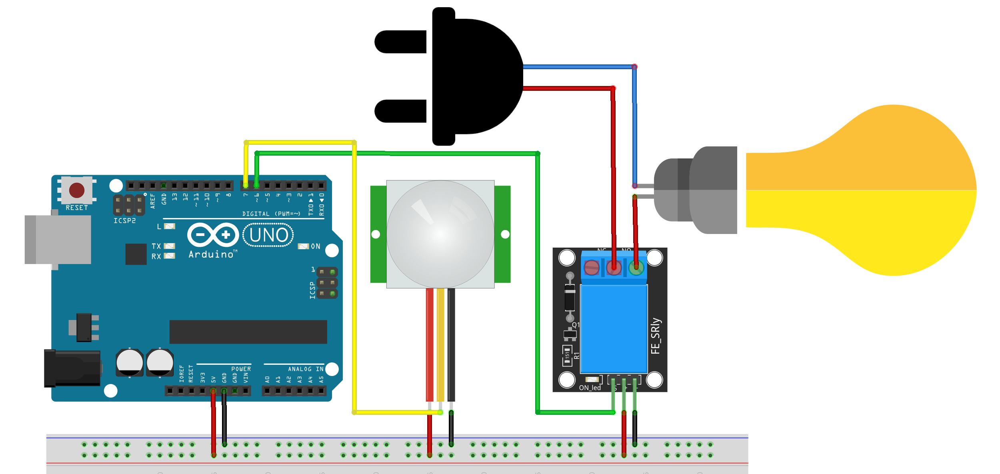

This magic can be created using simple components. Particularly, a PIR motion sensor, a relay, and, of course, an Arduino!
A PIR motion sensor is simply a sensor that detects whether someone is nearby or not using IR. A more detailed guide for PIR sensor is explained here.
A relay is as simple as a switch but for high voltages. That is, the bulb in our case. More details about relays can be found here.
⚠️ Caution ⚠️ We love you and we don't want anything bad to happen to you! This project requires high voltage connections that are dangerous. Please ask for help if you are not familiar with high voltage!
Now we can proceed and start getting the needed components and connect them as shown in the picture.

Connections:
This is of course in addition to connecting the bulb to the relay and the wall socket. But wait! Better to try the code first before connecting it to the socket. Once all is done and the connections are surely perfect, then carefully plug it.
/*
PIR motion controlled relay
Tutorial link: https://www.learn.voltaat.com/post/pir-relay
This is an Arduino sketch turns on a relay once motion is detected by the PIR sensor.
Components Needed:
1. PIR Motion sensor ....x1
2. Relay ................x1
Connections (Facing the sensor and the relay towards you with the pins downwards):
Arduino pin GND → Breadboard ground line
Arduino pin 5V → Breadboard 5V line
PIR motion sensor 1st pin from right → Breadboard ground line
PIR motion sensor 1st pin from left → Breadboard 5V line
PIR motion sensor Middle pin → Arduino pin 7
Relay GND pin → Breadboard ground line
Relay VCC pin → Breadboard 5V line
Relay Signal pin (far right pin) → Arduino pin 6
*/
#define PIR_PIN 7 // Pin of PIR Motion Sensor
#define RELAY_PIN 6 // Pin of Relay Module
// Commands inside void setup run once
void setup() {
Serial.begin(9600); // Start the serial monitor
pinMode(RELAY_PIN, OUTPUT); // Set Pin connected to Relay as an OUTPUT
digitalWrite(RELAY_PIN, LOW); // Set Pin to LOW to turn Relay OFF
}
// Commands inside void loop run forever
void loop() {
// If Motion detected
while (digitalRead(PIR_PIN) == HIGH) {
digitalWrite(RELAY_PIN, HIGH); // Turn Relay ON
Serial.println("Relay is ON");
delay(500); // delay for half a second
}
// Keep the relay off as far as no motion detected
digitalWrite(RELAY_PIN, LOW); // Turn Relay OFF
Serial.println("Relay is OFF");
delay(500); // delay for half a second
}